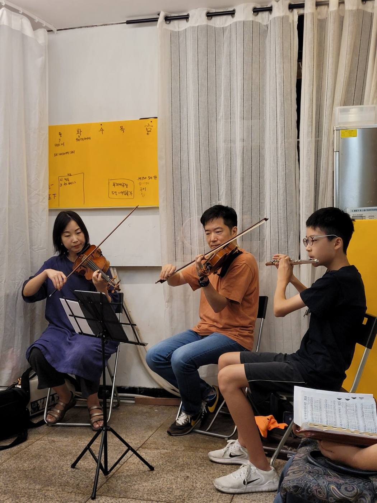

예배와 모임
| 주일예배 | 매주일 오전 10시 서울시 종로구 종로 120, 동영타워 5층 누구나 참석하실 수 있습니다. |
|---|---|
| 아침묵상 | 매주 화요일 오전 7시 30분 · 온라인 공동체 성경읽기 |
| 소그룹 모임 | 매주 금요일 밤 9시 30분 · 온라인 |
처음 오시는 분은 오시는 길을 참고해 주세요. 문자로 연락 주시면 확인 후 안내해 드립니다.
주일예배 순서
신앙고백(사도신경) · 경배와 찬양 · 참회의 기도 · 광고 및 봉헌 · 성경봉독 · 설교 · 축도


설교 영상
주일 설교는 날마다교회 유튜브 채널에서 보실 수 있습니다.